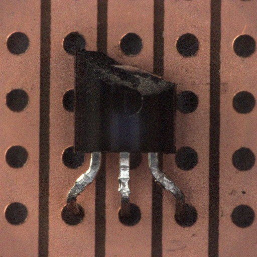
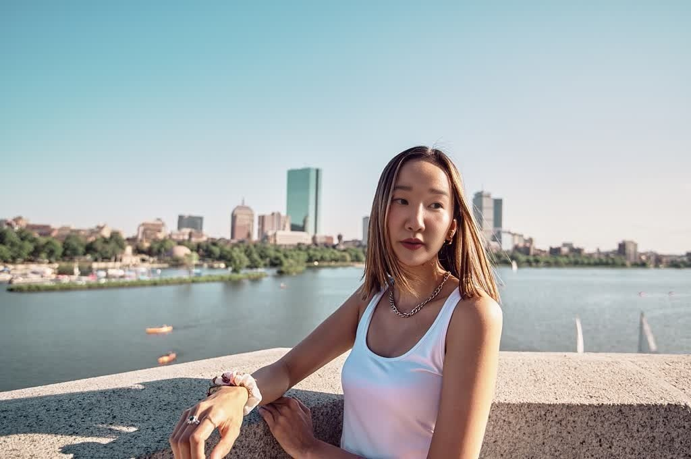
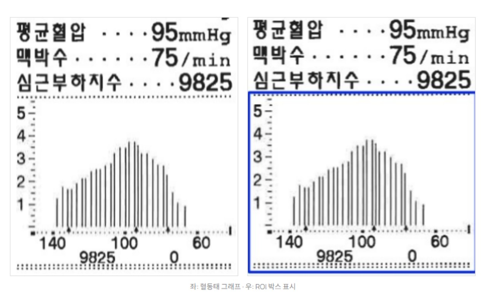
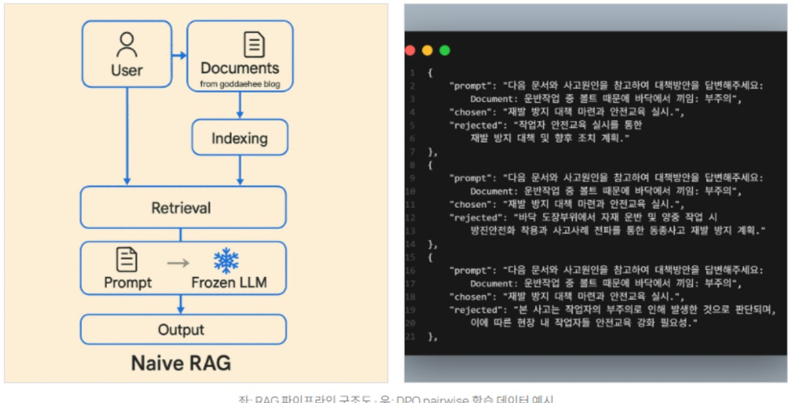
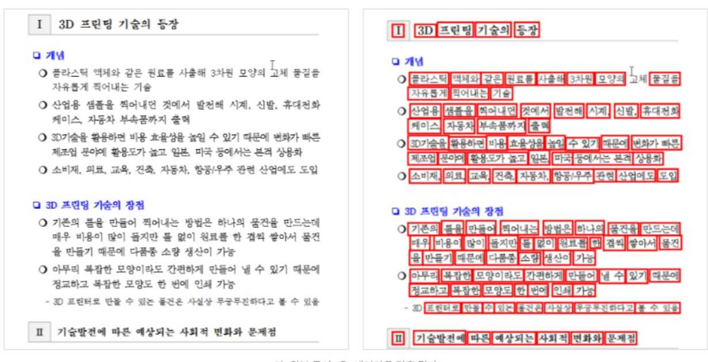
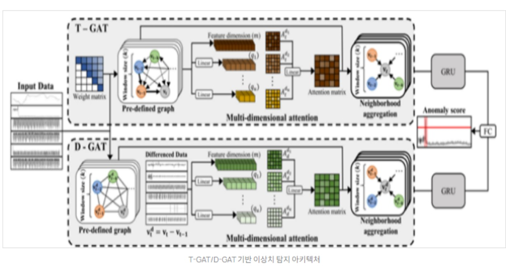

참여 내역
DACON 경진대회 참여 이력
접근 방식
모델 설계 원칙
예측/분류 경험
기온 예측, 변이 유전체 분류, 교통사고 피해 예측 등 다양한 ML대회로 분석 방법론과 리더보드 기준의 객관적 실력을 쌓았습니다
Low Cost, High Quality
최적화 기법으로 자원 소모를 줄이고, 증강과 노이즈 시뮬레이션으로 학습 환경과 무관하게 결과물의 품질을 끌어올립니다
Fine-grained
이미지를 통째로 보지 않고 세밀한 단위로 분할해 차별점을 탐지합니다. 최고의 모델을 만든 뒤에도 그 이상 의 차별점을 찾습니다
PROJECT 01 · UNSUPERVISED ANOMALY DETECTION
반도체 소자 이상탐지
anomalib의 PatchCore와, ResNet18 임베딩 기반 Isolation Forest를 함께 돌리는 앙상블 모델로,
결함 샘플이 거의 없는 반도체 공정에서도 이상 소자를 비지도 학습 기반으로 짚어냅니다.

INPUT · 샘플 1PROJECT 02 · REAL-TIME THERMAL RESTORATION
실시간 열화상 복원
Restormer 기반 구조에 프롬프트 조건을 결합한 UPFN(Unified Prompt Fusion Network)이
센서 노이즈·모션 블러·조도 열화를 단일 추론으로 복원하고,
추론 단계에서 렌즈 왜곡까지 보정해 출력합니다.
PROJECT 03 · THERMAL SUPER-RESOLUTION
열화상 초해상도 복원
EDVR 스타일 PCD 정렬과 RRDB 기반 업샘플링으로 4배 초해상도 복원을 수행하는 BiaSRNet과,
그 위에 조건부 확산으로 지각적 질감을 더하는 BiadSRNet 두 모델을 전환하며 비교할 수 있습니다.
PROJECT 04 · TURBULENCE THERMAL SUPER-RESOLUTION
난류 열화상 초해상도 복원
대기 난류로 프레임마다 다르게 일렁이는 왜곡을 여러 프레임을 정렬·융합해 상쇄한 뒤 4배 초해상도로 복원합니다.
지각 품질에 맞춘 TurbIR-P와 시간 일관성에 맞춘 TurbIR-T 두 모델로 전환하며 비교할 수 있습니다.
PROJECT 05 · MONOCULAR CROWD LOCALIZATION
단일 영상 군중 위치·밀도 분석
보정하지 않은 RGB 영상 한 장에서 사람 위치, 카메라 화각·기울기·높이, 사람별 거리를 한 번의 추론으로 추정하고, 위에서 내려다본 지면 좌표로 옮겨 군집별 인원·면적·밀도를 계산합니다.
PROJECT 06 · DACON 236753
블랙박스 영상 사고 분석 모델
영상 한 편에서 재촬영 여부, 충돌·회피 동작, 조향·가속·감속까지
서로 다른 모델로 순차 분석합니다.
PROJECT 07 · DEEPFAKE DETECTION
이미지·영상 딥페이크 탐지
2025년 하반기 헥토 채용 AI 경진대회 과제로,
이미지와 영상에 남은 생성·조작 흔적을 탐지하는 모델을 개발했습니다.

INPUT · 샘플 1PROJECT 08 · ROI EXTRACTION PIPELINE · 2024.09–2024.10
혈동태 영역 추출 파이프라인
데이터바우처 스마트웰니스 과제로,
혈동태 그래프에서 분석 대상 ROI를 2단계 YOLOv9 앙상블로 추출했습니다.

2단계 YOLOv9 앙상블
직접 라벨링한 ROI 데이터로 Model1을 학습하고, 오예측·미검출 케이스를 추가 라벨링해 재학습한 Model2를 별도로 구축했습니다.
후처리 기반 단일화
두 모델을 각각 추론한 뒤 confidence 0.7 초과 후보 중 면적이 가장 큰 bbox를 모델별로 뽑고, 최종적으로 더 큰 쪽 하나만 채택해 ROI를 단일화했습니다.
전처리(OpenCV) – 모델(YOLOv9 앙상블) – 후처리(OpenCV)로 이어지는 end-to-end 파이프라인을 구축했습니다.
PROJECT 09 · DPO LLM FINE-TUNING · 2025.02–2025.05
DPO 기반 LLM 강화학습
양자화된 Gemma2로 선호 데이터를 자동 생성하고,
DPO로 파인튜닝한 모델을 RAG 파이프라인에 연결해 서빙까지 구축했습니다.

선호 데이터 자동 생성
양자화된 Gemma2 모델로 사고원인→대책 후보 답변을 다수 생성하고, 정답과의 유사도로 랭킹해 상위 4개 후보의 모든 조합을 pairwise 데이터로 구성했습니다.
End-to-End 학습·서빙
TRL DPO를 FSDP(멀티GPU)로 학습하고, 학습된 모델을 vLLM으로 배치 추론해 결과를 저장하는 파이프라인까지 직접 연결했습니다.
건설공사 사고 예방 대책 생성 문제를 통해 양자화·RAG·강화학습 최신 기법을 end-to-end로 적용했습니다.
PROJECT 10 · OCR MODEL UPGRADE · 2025.06–2025.12
VLM 기반 OCR 모델 학습
레이아웃 검출 → 텍스트 검출 → 인식의 3단계 파이프라인을,
탐지와 문장 인식을 한 번에 처리하는 LoRA 파인튜닝 VL 모델로 교체했습니다.

1세대: 3단계 인식 파이프라인
레이아웃 검출 → 텍스트 검출 → 인식으로 이어지는 인코더-디코더 구조로 시작했지만, 어려운 필체 학습이 힘들고 여러 단계를 거쳐야 하는 비효율이 있었습니다.
2세대: 통합 VL 모델 LoRA 파인튜닝
탐지와 동시에 긴 문장을 한 번에 학습하는 VL 모델을 LoRA로 파인튜닝해, 속도·정확도 모두 기존 1세대 모델을 능가했습니다.
AI Hub 데이터 수집부터 Layout-Detection·Table Extractor 결합까지, 사내 OCR 고도화를 처음부터 끝까지 담당했습니다.
PROJECT 11 · WATER QUALITY ANOMALY DETECTION · 2025.08–2025.12
결측치 보간 및 LLM을 통한 이상치 모니터링
국립환경과학원 실시간 수질정보시스템 과제로,
결측치 보간부터 이상치 탐지, LLM 자동 보고까지 운영 가능한 파이프라인을 설계했습니다.

품질 안정화
주기 재샘플링 후 선형·LiNAR 보간에 XGBoost 보간을 더해 결측치를 보완하고, DUOGAT/HGAT 계열 모델로 예측 오차 기반 anomaly score를 산출했습니다.
설명 가능한 자동 보고
attention(시간 lag)과 SHAP 변수 중요도를 결합해 영향 변수를 추출하고, 이상치 결과를 LLM으로 표준화된 한국어 보고서로 자동 변환했습니다.
라벨 유무에 따라 F1 최적 임계값 / 분위수 기반 임계값을 선택하는 운영 가능한 이상탐지 파이프라인을 설계했습니다.
PROJECT 12 · GPU→NPU MIGRATION · 2026.08
NPU 기반 최적화 파이프라인 설계
GPU 아키텍처를 그대로 이식하지 않고 실측 벤치마크로 먼저 반증한 뒤 재설계해,
카메라 수와 무관하게 확장 가능한 구조를 확보했습니다.
배치 가정의 반증
순수 rknn_run 벤치마크에서 독립 3코어 방식이 36.0fps, 통합코어(배치=4) 방식이 12.9fps로 오히려 2.8배 느림을 확인했습니다.
워커 풀 재설계
3개의 독립 rknn_context를 코어별로 고정 배정해 라운드로빈 처리하도록 재설계했습니다. 4채널 이상에서는 총 처리량이 NPU 풀 상한인 93~96fps에 포화됩니다.
그래프 절단·재구현으로 지연시간 81.4ms→31.4ms(2.1배), 재현율 97.5%를 확보했고, NPU 활용률은 60%→85%까지 개선됐습니다.